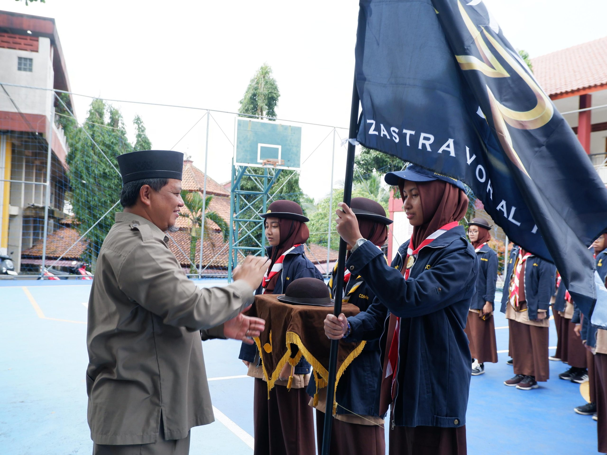

Ruang tumbuh.
Ruang berprestasi.
Mendampingi santri menjadi pribadi shalih, muslih, dan qudwah.
Karakter kuat.
Potensi berkembang.
Pembinaan karakter serta pendampingan prestasi akademik dan non-akademik.
Pembinaan santri
Kebiasaan dan kegiatan yang menumbuhkan disiplin, kepedulian, dan tanggung jawab.
- Kedisiplinan
- OSPETA
- Gerakan Adiwiyata
- Camp OSN
- Rihlah Ilmiah
- Mukhoyam
- Pembimbingan lomba akademik dan non-akademik
Bimbingan konseling
Pendampingan dan konsultasi oleh guru BK Ikhwan dan Akhwat untuk mendukung pembentukan karakter santri.
Konseling pribadi
Gaya belajar
Minat & bakat
Psikotes

Belajar tangguh.
Belajar mengabdi.
Gerakan Pramuka membina kepribadian dan akhlak, kecerdasan dan keterampilan, kesehatan fisik, serta semangat kebangsaan dan pengabdian.
Panduan seragam santri.
Pilih hari untuk melihat seragam Ikhwan dan Akhwat. Klik foto untuk memperbesar.
Tahun ajaran 2026/2027 · Panduan dari sekolah
Temukan minat.
Kembangkan bakat.
Ruang untuk menambah pengetahuan, keterampilan, dan wawasan sesuai minat santri.
Mari mengenal Al Kahfi lebih dekat.
Informasi sekolah, kebutuhan santri, dan ruang untuk berkolaborasi.